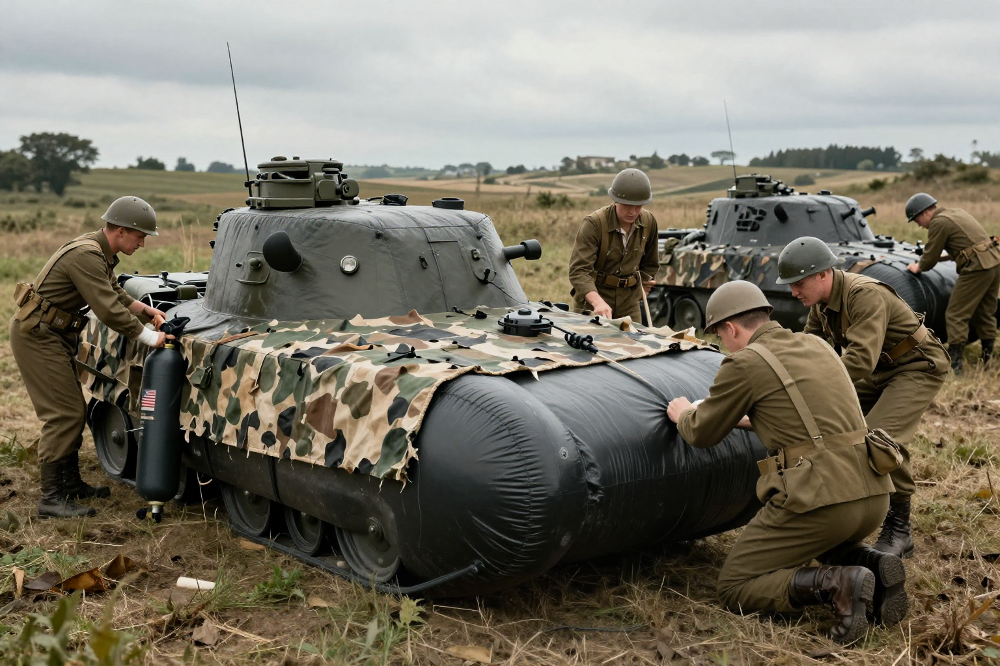

Interesting History
The Lost Colony of Roanoke: America's Oldest Unsolved Mystery and the Word Carved in Wood
The Franklin Expedition: Arctic Ice, Lost Ships, and the Inuit Who Knew Where They Were

The Princes in the Tower: England's Most Enduring Royal Mystery

Salem Witch Trials: How Mass Hysteria and Fear Executed 20 People in Colonial America

Anastasia Romanov: The Princess Who Vanished and the Woman Who Spent 60 Years Pretending to Be Her

Black Dahlia: The Gruesome 1947 Murder That Remains Hollywood's Greatest Unsolved Case

Zodiac Killer: The Unsolved Murders That Terrified California
Jack the Ripper: The Victorian Killer Whose Identity Remains a Mystery

The Mary Celeste: History's Greatest Ghost Ship Mystery

Amelia Earhart: 88 Years Later, Are We Close to Finding Her Plane?

D.B. Cooper: The Only Unsolved Skyjacking in American History

The Ghost Army: How Fake Tanks and Sound Effects Helped Win WWII

The London Beer Flood of 1814: A Wave of Destruction

The New England Vampire Panic of 1892: When a TB Outbreak Spawned a Vampire Hunt

Wilmer McLean: The Man Who Couldn't Escape the Civil War

The Cadaver Synod: The Bizarre Trial Where a Dead Pope Was Dug Up and Condemned

The Great Molasses Flood: The Day a Deadly Wave of Syrup Destroyed Boston
The Great Emu War: When Australia's Military Lost to 20,000 Birds

The Lost Fabergé Eggs: Six Imperial Treasures Still Waiting to Be Found

The Oak Island Money Pit: 200 Years of Treasure Hunting and the World's Most Famous Hole

El Dorado: The Legendary City of Gold That Drove Conquistadors Mad

The Crystal Skulls: Ancient Mayan Artifacts or Elaborate Modern Forgeries?
Shroud of Turin: The 14-Foot Linen That Science Still Can't Explain

The Voynich Manuscript: The Most Mysterious Book in the World

The Winchester Mystery House: Decades of Building, Staircases to Nowhere, and an Heiress Changed by Grief

The Dancing Plague of 1518: When Hundreds Danced Themselves to Death